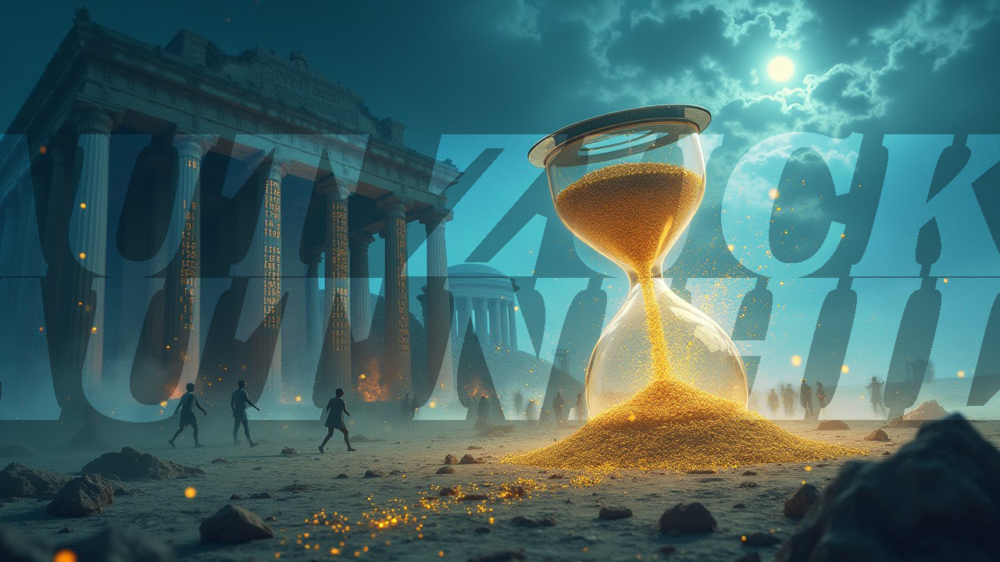
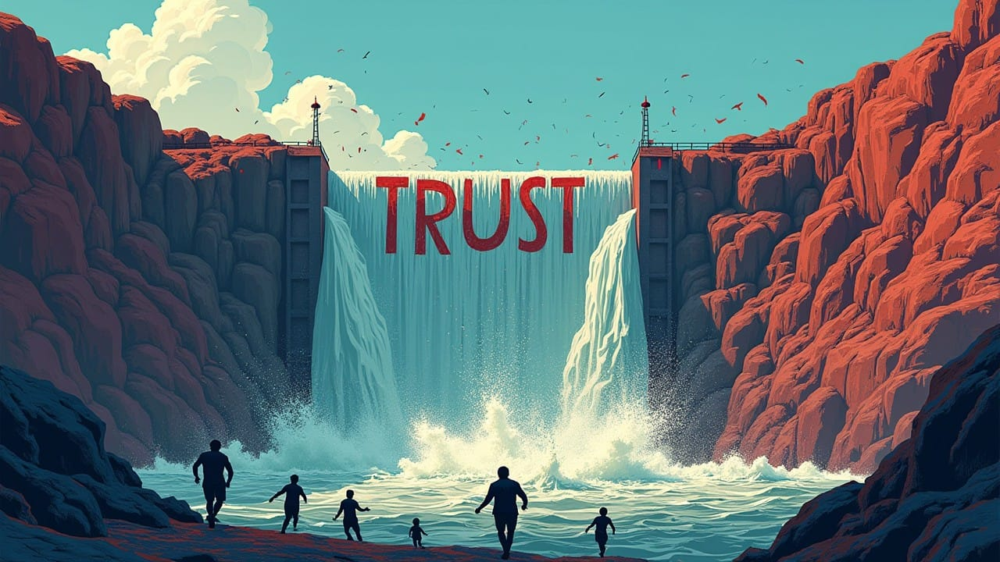

From Likes to Leaves—When Trust Became the Ultimate Unfriend
Meta's fact-checking fiasco triggers digital exodus, shattering platform theory. As users flee en masse, we witness the first "collective flight response" in social media history. Is trust the ultimate currency in our digital social contract?


"The most expensive thing in the world is trust. It can take years to earn and just a matter of seconds to lose."

New Year's Resolutions: ____ Zuck
January 2025 has presented us with an extraordinary natural experiment in social platform dynamics that fundamentally challenges our existing models of digital social behavior. Meta's abrupt dismantling of its fact-checking infrastructure represents more than mere corporate restructuring—it constitutes an unprecedented test of platform stability mechanics that no responsible researcher would deliberately design. The company's decision to remove third-party fact-checking systems, loosen content moderation policies, and roll back restrictions on political content has triggered what appears to be the first documented mass-scale user exodus from a major social platform driven purely by policy changes.
The observable data shatters conventional wisdom about social platform resilience. We're witnessing an unprecedented collective flight response manifesting through:
- Search patterns achieving "breakout" status—representing increases of over 5000% in queries related to platform exodus.
- Dramatic spikes in new user registrations on alternative platforms like Bluesky and Mastodon.
- Viral social media campaigns encouraging users to delete their Meta accounts.
This isn't merely user dissatisfaction; it's a fundamental rupture in the platform-user relationship that demands rigorous analysis.
Most fascinating is the velocity of this response. Traditional platform theory suggests that user bases demonstrate significant inertia, resistant to dramatic behavioral shifts. Yet here we observe a near-instantaneous collective response that suggests the existence of previously unidentified threshold effects in platform trust mechanics.
The Architecture of Control: Examining Core Mechanisms
Let us dissect the underlying psychological and social mechanisms with scientific precision. Meta's platform architecture has historically relied on what you could call a digital hostage model—a sophisticated system of incremental investment through accumulated social connections, business relationships, and personal history. This creates a form of psychological lock-in that traditionally prevents mass exodus events.
The genius—or perhaps the hubris—of this system lies in its exploitation of fundamental human psychological vulnerabilities. Users become entrapped through a series of small commitments that accumulate over time: photos shared, relationships maintained, business connections established. Each piece of content uploaded, each relationship cultivated, each business interaction conducted increases the perceived cost of departure.
However, Meta's current natural experiment reveals a previously unobserved phenomenon: the trust threshold effect. When platform integrity deteriorates beyond a certain point, we observe a cascade effect that overwhelms traditional retention mechanisms. This suggests that user trust functions not as an enhancement but as fundamental infrastructure—much like the foundation of a building.
The mechanics of this system operate through several key vectors:
- Engagement-Dopamine Cycle: Creates physiological dependency through intermittent reinforcement schedules, mimicking addictive behaviors.
- Social Graph Integration: Generates perceived irreplaceability of platform connections, leveraging fear of social isolation.
- Content Accumulation Effect: Builds artificial switching costs through historical investment, exploiting the sunk cost fallacy.
- Business Dependency Vector: Creates economic barriers to platform departure, particularly for small businesses and content creators.
- Identity Integration: Blurs the line between digital and real-world identity, making platform departure feel like a loss of self.
What makes the current situation particularly fascinating is how these traditionally stable mechanisms appear to collapse simultaneously when trust thresholds are breached. The removal of fact-checking systems seems to have triggered a collective recognition of platform risk that overwhelms all accumulated psychological barriers to departure.
Historical Context: A Pattern of Escalating Compromises
The current exodus must be viewed within a broader historical context of platform integrity failures. Meta's platforms have previously demonstrated remarkable user retention despite documented catastrophic failures:

- 2016: Russian interference in U.S. elections
- 2018: Cambridge Analytica scandal
- 2021: Whistleblower revelations about Instagram's impact on teen mental health
- 2021: Platform's role in coordinating January 6th activities
- 2018-2022: Ongoing role in amplifying hate speech leading to real-world violence, including the Myanmar genocide
What makes this moment different is the explicit acknowledgment of reduced safety mechanisms, triggering what appears to be a collective recognition of platform risk.

This historical pattern reveals a crucial insight: platform stability appears to rely not just on actual safety measures, but on the perception of institutional commitment to user protection. The removal of fact-checking systems represents not just a practical change but a symbolic withdrawal of this commitment, triggering what appears to be a mass recalibration of platform trust.
Previous incidents, while severe, could be framed as failures of execution rather than intent. The current policy shift, however, represents a deliberate withdrawal of protective mechanisms, fundamentally altering the platform-user contract. This distinction proves crucial in understanding the unprecedented scale of user response.
The timing of this shift, coinciding with anticipated political changes, adds another layer of complexity to the analysis. It suggests a catastrophic miscalculation in assuming that political alignment could compensate for the destruction of trust infrastructure.
The Network Effect Paradox
Perhaps most fascinating is the apparent reversal of traditional network effect dynamics. Conventional platform theory suggests that network effects create increasing returns to scale, making platforms more valuable as they grow larger. However, the current exodus suggests something far more intriguing: negative network effects may propagate faster than positive ones, following cascade patterns similar to bank runs or stock market crashes.
This reveals a fundamental misunderstanding in traditional platform theory. Network effects appear to operate asymmetrically—while they build slowly through positive reinforcement, they can collapse rapidly through negative cascade effects. The very interconnectedness that creates platform value can accelerate its dissolution when trust thresholds are breached.
Consider the mechanics: Each user departure not only reduces the platform's value for remaining users but actively signals platform instability. This creates a feedback loop where departures trigger additional departures, potentially leading to catastrophic system collapse. This pattern suggests that platform stability may be far more fragile than previously theorized.
The emergence of viable alternative platforms further accelerates this effect:
- Decentralized options (Bluesky, Mastodon): Offer increased user control and data portability.
- Privacy-focused alternatives (Signal, Telegram): Appeal to users concerned about data protection.
- Niche community platforms (Discord, Reddit): Provide more targeted, interest-specific experiences.
These alternatives reduce switching costs and provide ready options for displaced users, challenging fundamental assumptions about platform moats and competitive dynamics.
Trust as Infrastructure: A New Paradigm
The implications of this natural experiment extend far beyond Meta's immediate crisis. If content moderation and fact-checking function as essential infrastructure rather than optional features, this suggests the need for a fundamental reconceptualization of platform stability requirements. The rapid trust collapse we're witnessing indicates that platform governance needs to be considered as crucial as financial regulation in maintaining system stability.
This necessitates a complete reevaluation of digital platform architecture. Just as financial systems require reserve requirements and safety mechanisms, social platforms may require minimum trust infrastructure to maintain stability. The current experiment suggests that these requirements are not optional enhancements but fundamental prerequisites for platform stability.
Consider the parallels with financial system stability: Banks maintain reserve requirements not just for practical risk management but to maintain systemic trust. Similarly, social platforms may require "trust reserves" in the form of robust moderation systems, fact-checking infrastructure, and transparent governance mechanisms.
This reconceptualization has profound implications for platform regulation and governance. It suggests that certain platform safety mechanisms should be considered mandatory infrastructure rather than optional features subject to business discretion.
Implications for Digital Social Architecture
This natural experiment demands a fundamental reconsideration of digital social infrastructure. The patterns we're observing suggest that platform stability requires more than just technical infrastructure—it demands consistent maintenance of user trust through transparent governance and reliable content moderation systems.
Meta's experiment, whether intentional or not, provides unprecedented insight into the fragility of digital social networks and the limitations of network effects in maintaining platform stability. The cost of ignoring these lessons could be the catastrophic collapse of platforms we've come to consider too big to fail.
As we continue to build and rely upon digital social infrastructure, understanding these dynamics becomes increasingly crucial. The implications extend far beyond Meta's immediate future, potentially reshaping our fundamental understanding of digital social spaces and their governance requirements.
Most critically, this event may mark the end of the "move fast and break things" era in platform governance. The demonstrated fragility of user trust suggests that platform stability requires a fundamentally different approach—one that prioritizes:
- Infrastructure integrity over growth metrics
- Long-term user trust over short-term engagement
- Transparent governance over opaque algorithms
- Proactive risk management over reactive crisis control
- Ethical considerations in AI and algorithm development
As we stand at this digital crossroads, the tremors of Meta's misstep ripple far beyond Silicon Valley. We are witnessing nothing less than the birth pangs of a new digital social contract—one that demands platforms evolve from mere profit engines into stewards of our collective discourse. The architecture of tomorrow's digital agora will not be built on the shifting sands of engagement metrics, but on the bedrock of trust, transparency, and shared responsibility. In this uncharted territory, the platforms that survive and thrive will be those that recognize a fundamental truth: in the economy of human connection, trust is not just an asset—it is the currency itself.
Courtesy of your friendly neighborhood,
🌶️ Khayyam

Catch up on what is going to affect 2025...